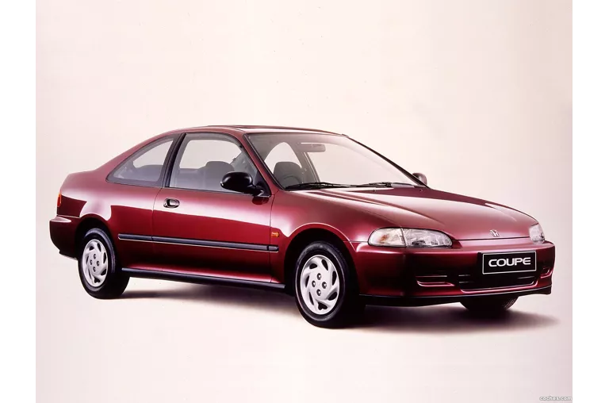

O Honda Civic Coupé 1995 da quinta geração foi importado para o Brasil no início da década de 1990 e é conhecido por seu design, dirigibilidade e confiabilidade. O modelo se tornou popular no mercado de usados e entre entusiastas devido à durabilidade, facilidade de manutenção e potencial de personalização.
Motor: 1.6 de 16 válvulas com comando de válvulas VTEC na admissão. Potência: Cerca de 125 cv a 6.500 rpm. Torque: 14,6 kgfm a 5.200 rpm. Câmbio: Manual ou automático. Tração: Dianteira.
O Civic G10 é a décima geração do sedã da Honda, produzida no Brasil entre 2016 e 2021. Considerado por muitos o último Civic nacional acessível, o modelo se destaca pelo design esportivo, bom espaço interno e tecnologia embarcada, especialmente nas versões mais equipadas.
Presente nas versões LX, Sport, EX e EXL. Possui até 155 cv de potência. Oferece câmbio automático do tipo CVT, que simula sete marchas. A versão Sport, no lançamento, também teve opção de câmbio manual de seis marchas.